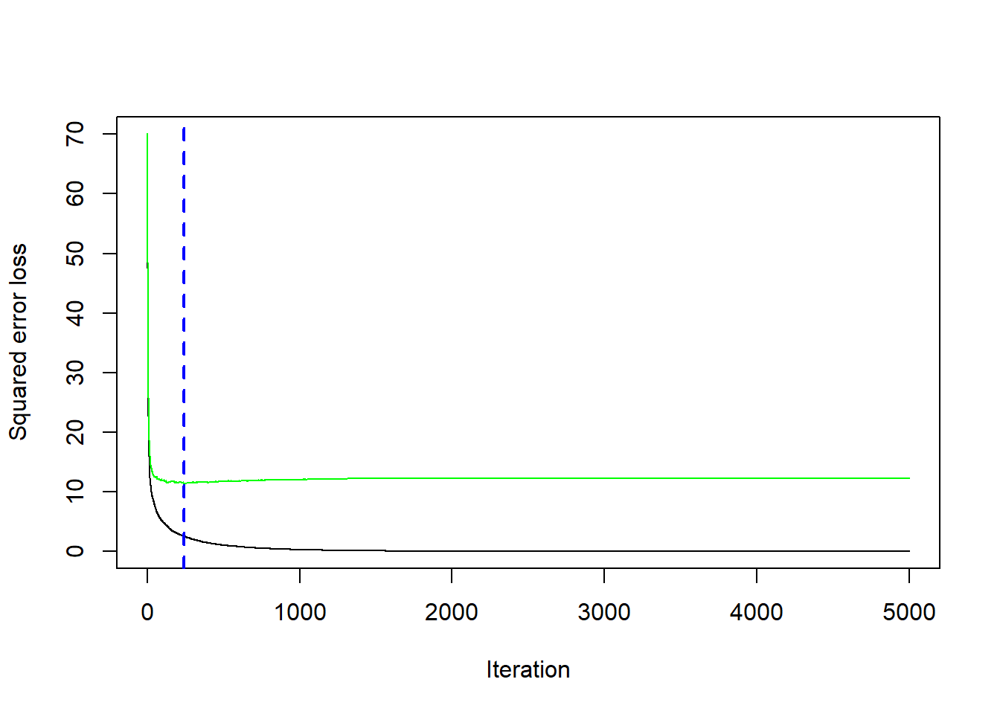

9 Gradient Boost
Gradient Boost fue propuesto por Friedman (1999a) y Friedman (1999b) y consiste en crear varios predictores en secuencia. El primer predictor usa la media de la variable \(Y\) para predecir, luego el segundo predictor explica los errores del primer predictor, el tercer predictor explicar los erroes del segundo predictor y así sucesivamente. En la siguiente figura se muestra una ilustración de lo que es Gradient Boost.

Ejemplo
En este ejemplo se muestra como aplicar Gradient Boost de forma manual usando los datos del video anterior.
height <- c(1.6, 1.6, 1.5, 1.8, 1.5, 1.4)
color <- c("blue", "green", "blue", "red", "green", "blue")
gender <- c("male", "female", "female", "male", "male", "female")
weigth <- c(88, 76, 56, 73, 77, 57)La librería para crear los árboles será rpart.
El valor learning rate en el ejemplo será \(\alpha=0.10\). A continuación el código para crear el modelo inicial y los modelos siguientes del video anterior.
a <- 0.1 # Learning rate
# Modelo inicial
res1 <- weigth - mean(weigth)
# Modelo 2
mod2 <- rpart(res1 ~ height + color + gender,
control=rpart.control(minsplit = 3))
res2 <- weigth - (mean(weigth) + a * predict(mod2))
# Modelo 3
mod3 <- rpart(res2 ~ height + color + gender,
control=rpart.control(minsplit = 3))
res3 <- weigth - (mean(weigth) + a * predict(mod2) + a * predict(mod3))A continuación una tabla con los residuales de los modelos.
## res1 res2 res3
## 1 16.833333 15.15 13.635
## 2 4.833333 4.35 3.915
## 3 -15.166667 -13.70 -12.380
## 4 1.833333 1.45 1.105
## 5 5.833333 5.45 5.105
## 6 -14.166667 -12.70 -11.380Para predecir el valor de weigth cuando height=1.7, color=“green” y gender=“male” se usa el siguiente código.
new_data <- data.frame(height=1.7, color="green", gender="female")
mean(weigth) + a * predict(mod2, new_data) + a * predict(mod3, new_data)## 1
## 72.085Ejemplo
En este ejemplo se van a usar los datos Boston del paquete MASS de Ripley and Venables (2025) para predecir la variable medv en función de las otras covariables.
Para explorar la base de datos usamos el siguiente código.
## 'data.frame': 506 obs. of 14 variables:
## $ crim : num 0.00632 0.02731 0.02729 0.03237 0.06905 ...
## $ zn : num 18 0 0 0 0 0 12.5 12.5 12.5 12.5 ...
## $ indus : num 2.31 7.07 7.07 2.18 2.18 2.18 7.87 7.87 7.87 7.87 ...
## $ chas : int 0 0 0 0 0 0 0 0 0 0 ...
## $ nox : num 0.538 0.469 0.469 0.458 0.458 0.458 0.524 0.524 0.524 0.524 ...
## $ rm : num 6.58 6.42 7.18 7 7.15 ...
## $ age : num 65.2 78.9 61.1 45.8 54.2 58.7 66.6 96.1 100 85.9 ...
## $ dis : num 4.09 4.97 4.97 6.06 6.06 ...
## $ rad : int 1 2 2 3 3 3 5 5 5 5 ...
## $ tax : num 296 242 242 222 222 222 311 311 311 311 ...
## $ ptratio: num 15.3 17.8 17.8 18.7 18.7 18.7 15.2 15.2 15.2 15.2 ...
## $ black : num 397 397 393 395 397 ...
## $ lstat : num 4.98 9.14 4.03 2.94 5.33 ...
## $ medv : num 24 21.6 34.7 33.4 36.2 28.7 22.9 27.1 16.5 18.9 ...Vamos a crear dos conjuntos de datos, uno de entrenamiento y otro de validación de la siguiente manera.
library(caret)
set.seed(123)
indexes <- createDataPartition(Boston$medv, p = .90, list = F)
train <- Boston[indexes, ]
test <- Boston[-indexes, ]El primer modelo predictivo será un árbol sencillo que nos servirá como elemento de comparación.
Ahora vamos a calcular el \(RMSE\) (root mean square error) y la correlación entre \(y\) y \(\hat{y}\).
## [1] 83.63843## [1] 0.9070587Para comparar los resultados del modelo vamos a crear un diagrama de dispersión entre \(y\) y \(\hat{y}\).
plot(x=train$medv, y=y_hat, xlab='Valor observado', ylab='Predicción')
abline(a=0, b=1, lty='dashed')Ahora vamos a usar la función gbm del paquete de Ridgeway and Developers (2024) para aplicar el algoritmo Gradient Boost con \(\alpha=0.01\), 5000 árboles (iteraciones) y una profundidad de 1 en cada árbol (stump).
library(gbm)
set.seed(123) # for reproducibility
model_gbm1 <- gbm(medv ~., data = train,
distribution="gaussian", cv.folds=5,
shrinkage=0.01, n.minobsinnode=10,
n.trees=5000, interaction.depth=1)
print(model_gbm1)## gbm(formula = medv ~ ., distribution = "gaussian", data = train,
## n.trees = 5000, interaction.depth = 1, n.minobsinnode = 10,
## shrinkage = 0.01, cv.folds = 5)
## A gradient boosted model with gaussian loss function.
## 5000 iterations were performed.
## The best cross-validation iteration was 4404.
## There were 13 predictors of which 13 had non-zero influence.Ahora vamos a calcular el \(RMSE\) (root mean square error) y la correlación entre \(y\) y \(\hat{y}\).
## [1] 3.636371## Using 4404 trees...## [1] 0.9542746Para comparar los resultados del modelo vamos a crear un diagrama de dispersión entre \(y\) y \(\hat{y}\).
plot(x=train$medv, y=y_hat, xlab='Valor observado', ylab='Predicción')
abline(a=0, b=1, lty='dashed')
Al comparar la correlación y los diagramas de dispersión se observa una mejora considerable con el modelo Gradient Boost.
Podemos construir una figura para observar la evolución del \(RMSE\) en función del número de árboles (iteraciones).

## [1] 4404De la figura anterior se observa que en la iteración 4404 (linea azul a trazos) fue donde se obtuvo el menor \(RMSE\).
Vamos a crear otro modelo de predicción pero cambiando algunos de los hiper-parámetros, \(\alpha=0.15\) y una profundidad de 3 en cada árbol.
set.seed(123)
model_gbm2 <- gbm(medv ~., data = train,
distribution="gaussian", cv.folds=5,
shrinkage=0.15, n.minobsinnode=10,
n.trees=5000, interaction.depth=3)Ahora vamos a calcular el \(RMSE\) (root mean square error) y la correlación entre \(y\) y \(\hat{y}\).
## [1] 3.370139## Using 241 trees...## [1] 0.9852213Para comparar los resultados del modelo vamos a crear un diagrama de dispersión entre \(y\) y \(\hat{y}\).
plot(x=train$medv, y=y_hat, xlab='Valor observado', ylab='Predicción')
abline(a=0, b=1, lty='dashed')
Podemos construir una figura para observar la evolución del \(RMSE\) en función del número de árboles (iteraciones).

## [1] 241En lugar de buscar esos hiper-parámetros a manualmente, podemos hacer una búsqueda automática creando un conjunto de posibles valores de los hiper-parámetros así.
# create hyperparameter grid
hyper_grid <- expand.grid(
shrinkage = c(0.01, 0.1, 0.3),
interaction.depth = c(1, 3, 5),
n.minobsinnode = c(5, 10, 15),
bag.fraction = c(0.65, 0.8, 1),
optimal_trees = 0, # a place to dump results
min_RMSE = 0, # a place to dump results
min_cor = 0
)
nrow(hyper_grid) # total number of combinations## [1] 81Para hacer la búsqueda usamos el siguiente código.
# randomize data
random_index <- sample(1:nrow(train), nrow(train))
random_train <- train[random_index, ]
for(i in 1:nrow(hyper_grid)) {
set.seed(123)
gbm.tune <- gbm(
formula = medv ~ .,
distribution = "gaussian",
data = random_train,
n.trees = 5000,
interaction.depth = hyper_grid$interaction.depth[i],
shrinkage = hyper_grid$shrinkage[i],
n.minobsinnode = hyper_grid$n.minobsinnode[i],
bag.fraction = hyper_grid$bag.fraction[i],
train.fraction = 0.75,
n.cores = NULL, # will use all cores by default
verbose = FALSE
)
# agregando la inf que nos interesa
hyper_grid$optimal_trees[i] <- which.min(gbm.tune$valid.error)
hyper_grid$min_RMSE[i] <- sqrt(min(gbm.tune$valid.error))
hyper_grid$min_cor[i] <- cor(random_train$medv, predict(gbm.tune))
}Organizamos los resultados en relación al menor \(RMSE\).
## shrinkage interaction.depth n.minobsinnode bag.fraction optimal_trees
## 1 0.30 5 5 0.80 88
## 2 0.30 5 5 0.65 127
## 3 0.01 5 5 0.80 3019
## 4 0.01 3 5 0.65 4897
## 5 0.01 5 5 0.65 4137
## 6 0.10 5 5 1.00 128
## 7 0.01 3 5 0.80 4884
## 8 0.01 5 5 1.00 2543
## 9 0.01 3 10 0.80 4984
## 10 0.01 5 10 0.80 3699
## min_RMSE min_cor
## 1 2.685273 0.9862784
## 2 2.729782 0.9869481
## 3 2.778927 0.9869945
## 4 2.782291 0.9853981
## 5 2.796934 0.9876546
## 6 2.800982 0.9803835
## 7 2.837197 0.9852038
## 8 2.837520 0.9855254
## 9 2.860405 0.9838807
## 10 2.870885 0.9860587# for reproducibility
set.seed(123)
# train GBM model
gbm.fit.final <- gbm(
formula = medv ~ .,
distribution = "gaussian",
data = train,
n.trees = 88,
interaction.depth = 5,
shrinkage = 0.3,
n.minobsinnode = 5,
bag.fraction = 0.80,
train.fraction = 1,
n.cores = NULL, # will use all cores by default
verbose = FALSE
) 
## var rel.inf
## rm rm 40.70059606
## lstat lstat 36.67225822
## dis dis 8.03512644
## crim crim 4.10937068
## nox nox 3.99034366
## ptratio ptratio 2.13830279
## age age 1.34811594
## black black 1.16184689
## tax tax 1.14437416
## indus indus 0.37045656
## rad rad 0.21608957
## zn zn 0.07111692
## chas chas 0.04200211http://uc-r.github.io/gbm_regression
## [1] 0.934735plot(x=test$medv, y=y_hat, xlab='Valor observado', ylab='Predicción')
abline(a=0, b=1, lty='dashed')